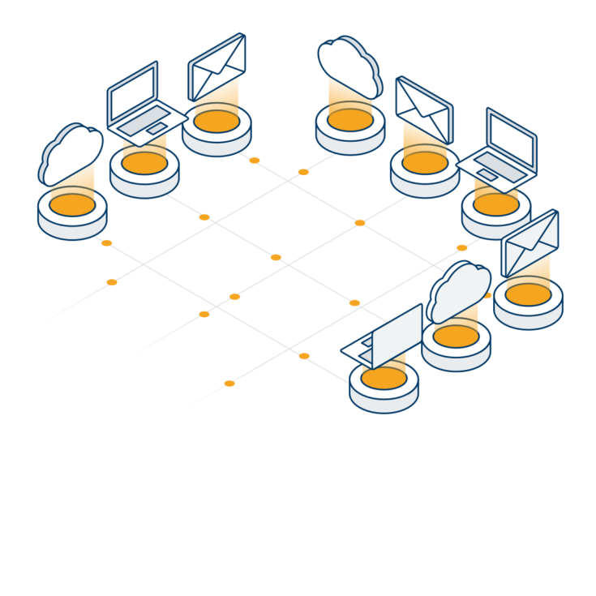
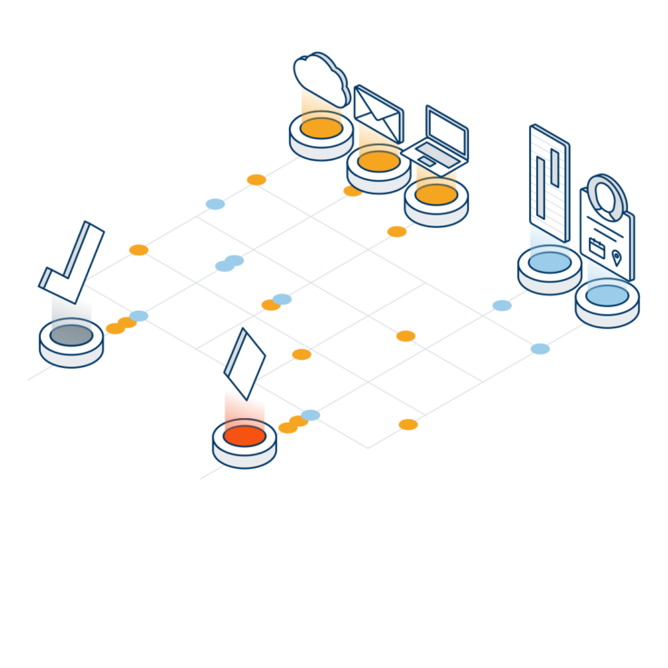
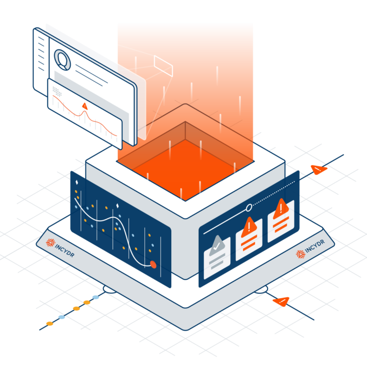
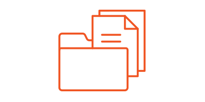
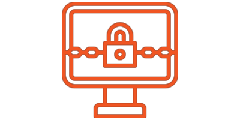

Detectar, investigar e responder a ameaças internas
CODE42 oferece soluções de backup para Endpoints, conectando as pessoas à informação que precisam nos dispositivos que mais utilizam, possibilitando a proteção contínua de dados e o acesso seguro, tanto para os utilizadores como para as empresas, em qualquer local.
Incydr - Detecta e responde ao risco interno
O que o torna diferente
O Incydr é um produto de detecção e resposta de risco de dados SaaS que permite às equipas de segurança mitigar eficazmente a exposição dos ficheiros e os riscos de exfiltração sem perturbar a colaboração legítima.

Simplicidade
Descubra rapidamente os seus pontos cegos de segurança de dados
O Incydr deteta a exposição e exfiltração de ficheiros através do computador, cloud ou caixa de email, através de um agente e integrações diretas. Monitoriza toda a actividade do ficheiro (criação, eliminação, modificação e movimento) independentemente do que é considerado aceitável ou inaceitável segundo a política de segurança. Esta abordagem abrangente da monitorização reduz o tempo de implementação e gestão, eliminando o processo de criação e aperfeiçoamento de regras. Também ilumina a organização relativamente aos pontos cegos da segurança de dados da mesma, mostrando atividades que escapam do radar de outras tecnologias de segurança. Obterá uma compreensão precisa das suas vulnerabilidades de ameaças internas.

Sinal
Cortar o ruído para encontrar o risco real
Incydr é uma solução suficientemente perspicaz para saber que existe uma diferença entre a colaboração diária e os eventos que representam um risco real. Filtra o ruído da atividade inofensiva, como a partilha de ficheiros entre domínios de confiança, para revelar apenas as ameaças que podem prejudicar o seu negócio. O Incydr adota uma abordagem multidimensional do risco interno, combinando um contexto rico em ficheiros, vectores e utilizadores. Surge esta informação juntamente com indicadores de risco adicionais para dar prioridade aos eventos que requerem investigação de segurança imediata.

Velocidade
Adotar uma abordagem de tamanho certo à resposta a ameaças internas
O Incydr fornece as respostas rápidas necessárias para substanciar as investigações de ameaças internas. Não há um tamanho único para a resposta às ameaças internas. As ações de resposta devem variar com base no impacto, histórico dos funcionários e intenção. Armada com os factos, a sua organização pode tomar uma resposta do tamanho certo. Quer se trate de ação automatizada, conversa correctiva, formação adicional ou mesmo acção legal.
Como o Incydr protege os seus dados corporativos

Ficheiro
-
Monitoriza todos os ficheiros – não apenas aqueles que foram marcados como sensíveis;
-
Oferece dados metada tais como o nome do ficheiro, a quem pertence, tamanho, localização, categoria e hash; e
-
Fornece aos analistas de segurança a capacidade de rever o conteúdo de um ficheiro
Vetor
-
Deteta a exposição e exfiltração, incluindo os uploads por web browser, sincronização de ficheiros para a Cloud, partilha de ficheiros, Airdrop e armazenamento amovível.
-
Filtra eventos de ficheiros que refletem o que é considerado atividade confiável e não confiável
-
Fornece detalhes do vetor tais como o nome de utilizador, nome do domínio, titulo e URL do tabulador do browser, marca, modelo nome do volume, ID da partição e número de série do armazenamento amovível.
Utilizador
-
Identifica comportamentos de risco como atividades remotas, eventos em ficheiros fora das horas de trabalho normal e tentativas para ocultar exfiltrações
-
Permite às equipas de segurança para programaticamente monitorizar utilizadores com fatores de risco mais elevados, tais como colaboradores que irão sair ou a contrato a termo.
-
Fornece 90 dias de histórico dos utilizadores para permitir encontrar patrões e anomalias de comportamento.

Ransomware recovery
A CODE42 permite que volte ao trabalho mais rápido, quando é atingido por Ransomware. A recuperação de dados em tempo real ajuda a recuperar rapidamente, sem nunca chegar a pagar um resgate.
-
Planeie o inevitável, implementando um backup automático e contínuo para cada utilizador.
-
Recupere a produtividade dos utilizadores ao recuperar os dados em poucos minutos após o início do ataque.
-
Recupere pontos de backup escolhidos, graças aos backups em tempo real e às versões de arquivos granulares.
-
Reduza o tempo de configuração, recuperando dados e configurações de perfil de utilizador.
-
Junte-se aos clientes da CODE42 que já pouparam mais de 50.000 dólares em custos de recuperação.
-
Reduza o tempo de configuração, recuperando dados e configurações de perfil de utilizador.
-
Quando a prevenção é impossível, a recuperação é o que importa. A CODE42 tem a tecnologia que precisa para recuperar os seus dados sempre que precisa.
-
Permite aos utilizadores recuperar os seus próprios dados utilizando um assistente de substituição de dispositivo incorporado.
Detecção de ameaças internas
Com o CODE42 ganha visibilidade sobre cada ficheiro, desde o seu conteúdo, a quem é o proprietário e como foi utilizado.
-
Identifique as tendências comportamentais dos utilizadores para que possa identificar movimentos anormais.
-
Veja exatamente para onde os dados se estão a movimentar e intervenha antecipadamente para prevenir ou minimizar o impacto.
-
Proteja os seus dados mais valiosos para evitar perda de dados acidentais e intencionais.
-
Ganhe visibilidade sobre os endpoints para ver quais são os arquivos que estão a ficar fora do seu controlo – e como.
-
Veja quando os arquivos são transferidos para aplicações pessoais de armazenamento na Cloud, como Box, OneDrive, Google Drive e Dropbox.
-
Identificar recuperações de arquivos incomuns ou anormalmente grandes que podem sinalizar que dados ou credenciais estão em risco.
-
Saiba exatamente quais são os arquivos transferidos para dispositivos de armazenamento de dados removíveis como USBs, discos rígidos externos ou cartões de memória (SD) seguros.
-
Faça uma análise detalhada dos movimentos de alto risco com o contexto necessário para agir: veja o nome do arquivo, o caminho e o hash do MD5, quando os arquivos foram recolhidos e através de que vetor exato.